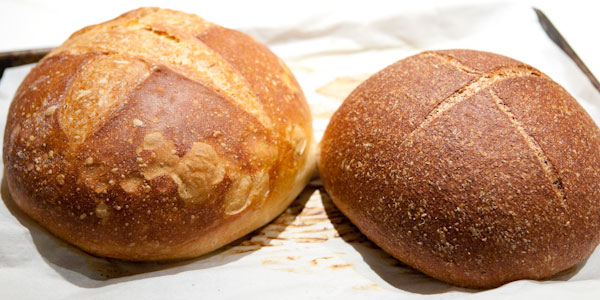
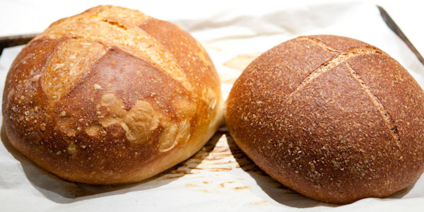

W starożytnej Grecji znano około 50 przepisów na różnego rodzaju chleby, w średniowieczu piekarze wypiekali 9. głównych rodzajów chleba.
Rozróżnia się chleb żytni (razowy i biały), chleb mieszany żytnio-pszenny oraz chleb pszenny. Wszystkie chleby razowe (a zwłaszcza tak zwane całoziarnowe – np. chleb Grahama i chleb Steinmetza) mają dużą wartość odżywczą i witaminową. W krajach północnych bardziej rozpowszechniony jest chleb żytni niż pszenny, w niektórych okolicach wypieka się także chleb z mąki jęczmiennej i owsianej, a na obszarach uprawy kukurydzy ważnym składnikiem ciasta do wypieku chleba jest mąka kukurydziana.
Większość współczesnych rodzajów chleba spotykanych w Europie i USA jest bardzo pulchna. Pulchny chleb łatwiej się gryzie i trawi.
W niektórych krajach śródziemnomorskich utrzymuje się jednak wciąż tradycja wypieku chleba niespulchnianego lub spulchnianego tylko w minimalnym stopniu. (m.in. na Sycylii, Grecji, krajach Maghrebu, Izraelu, Turcji).


 
